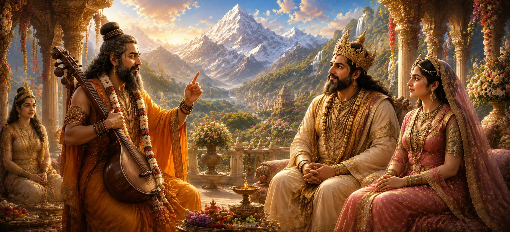

यह अध्याय बताता है कि कैसे ऋषि नारद ने देवी पार्वती की दिव्य नियति को खुले तौर पर प्रकट किया। उसके असाधारण गुणों को देखने के बाद, वह हिमालय और मैना को समझाता है कि उनकी बेटी भगवान शिव की शाश्वत पत्नी बनने के लिए नियत है। उनके शब्द अनिश्चितता को दूर करते हैं और उनके जन्म के पीछे के गहरे उद्देश्य को प्रकट करते हैं।
हिमालय और मैना ने आदरपूर्वक नारद से अपनी प्रिय पुत्री के भविष्य के बारे में पूछा। देखभाल करने वाले माता-पिता के रूप में, वे जानना चाहते थे कि उसकी नियति क्या होगी और आने वाले वर्षों में उसका जीवन कैसा होगा।
अपनी आध्यात्मिक अंतर्दृष्टि के माध्यम से, नारद को पार्वती की असली पहचान का पता चला। उन्होंने उसे दिव्य शक्ति के अवतार के रूप में पहचाना जो एक पवित्र उद्देश्य को पूरा करने और ब्रह्मांड में सद्भाव बहाल करने के लिए अवतरित हुई थी।
नारद ने घोषणा की कि पार्वती का विवाह भगवान शिव से होना तय था। हालाँकि शिव सांसारिक जीवन से अलग और ध्यान में डूबे हुए दिखाई देते थे, लेकिन वे पार्वती के पूर्ण दिव्य समकक्ष थे। उनके मिलन से देवताओं, ऋषियों और सभी जीवित प्राणियों को लाभ होगा।
जहां हिमालय ऐसे गौरवशाली भाग्य के बारे में सुनकर प्रसन्न हुआ, वहीं मैना को आश्चर्य और चिंता दोनों महसूस हुई। अपनी बेटी का विवाह तपस्वी भगवान शिव से करने के विचार ने उसके हृदय को प्रश्नों से भर दिया, फिर भी उसने नारद की बुद्धि पर भरोसा किया।
प्रत्येक पवित्र मिशन ईश्वरीय इच्छा के अनुसार चलता है।
शिव और शक्ति का मिलन ब्रह्मांडीय संतुलन बनाए रखता है।
ईश्वरीय मार्गदर्शन पर भरोसा करने से स्पष्टता और शांति मिलती है।
नारद के रहस्योद्घाटन ने पार्वती के जीवन की समझ को बदल दिया। जो एक साधारण राजकुमारी का भविष्य प्रतीत होता था उसे अब एक दिव्य ब्रह्मांडीय उद्देश्य के हिस्से के रूप में मान्यता दी गई थी जो ब्रह्मांड की नियति को आकार देगा।
यह अध्याय सिखाता है कि ईश्वरीय योजनाएँ अक्सर धीरे-धीरे स्पष्ट होती हैं। जो चीज़ शुरू में असामान्य या कठिन लग सकती है वह अंततः एक उच्च उद्देश्य को प्रकट कर सकती है जो अनगिनत प्राणियों के लिए आशीर्वाद लाती है।
नारद जैसे ऋषि दिव्य दूत के रूप में कार्य करते हैं जो उचित समय पर आध्यात्मिक सत्य प्रकट करते हैं। उनका ज्ञान व्यक्तियों को उन घटनाओं को समझने में मदद करता है जो एक बड़े ब्रह्मांडीय डिजाइन का हिस्सा हैं।
भविष्यवाणी के प्रकट होने के साथ, पार्वती की भविष्य की आध्यात्मिक यात्रा के लिए मंच तैयार हो गया। उसके भाग्य का ज्ञान अंततः भगवान शिव को प्राप्त करने के लिए आवश्यक भक्ति, अनुशासन और दृढ़ संकल्प को प्रेरित करेगा।
"ईश्वर द्वारा निर्धारित नियति सही समय पर प्रकट होती है।"
देवी पार्वती की दिव्य नियति को प्रकट करने के बाद, ऋषि नारद भगवान शिव के साथ उनके भविष्य के मिलन के बारे में बताते हैं। यह देखने के लिए अगले अध्याय को जारी रखें कि कैसे पार्वती इस पवित्र उद्देश्य को अपनाती हैं और भक्ति, दृढ़ संकल्प और अटूट विश्वास के माध्यम से महादेव को प्राप्त करने के लिए अपनी आध्यात्मिक खोज शुरू करती हैं।